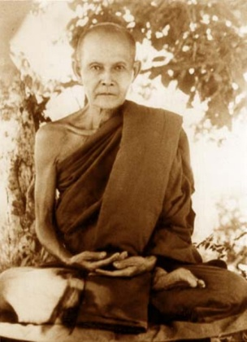

22 events, 52 sessions, 83 excerpts, 5:40:41 total duration
Most common topics:
Ajahn Chah
(3)
Chanting
(2)
Kamma
(2)
Pāli
(2)
Abhayagiri
(1)
Ageing
(1)
Ajahn Liem
(1)
Ajahn Pasanno
(1)
Characteristics of existence
(1)
Cittavivieka
(1)
3. “Could you please explain about the death process…how quickly does rebirth occur?” [Death] [Rebirth] // [Recollection/Death] [Delusion] [Self-identity view] [Recollection] [Impermanence] [Not-self] [Theravāda] [History/Early Buddhism] [Sutta] [Vajrayāna] [Clinging] [Culture/Thailand] [Chanting] [Goodwill] [Relinquishment] [Ceremony/ritual] [Kamma]
References: Amaravati Chanting Book, p. 55: Five Recollections; Amaravati Chanting Book, p. 12: The body is impermanent... [Similes] [Craving]
Simile: Fire blown by the wind (MN 72: Aggivacchagotta Sutta)
Story: A former monk asks Ajahn Chah about working with dying people to give them the opportunity for wholesome rebirth. [Ajahn Chah] [Teachers] [Fierce/direct teaching]
Quote: “I practice dying.” — The Dalai Lama [Dalai Lama]
3. “The lovingkindness chant includes 'May I abide in freedom from affliction.' Why is affliction not included in the wish for all beings?” [Goodwill] [Chanting] // [Divine Abidings] [Compassion]
Reference: Amaravati Chanting Book, p. 41.
6. “Can you speak about working with fear and loss of ego identity, fear, and death?” [Fear] [Self-identity view] [Death] // [Goodwill] [Aggregates] [Impermanence] [Delusion] [Faith] [Eightfold Path] [Perfections] [Recollection]
Reference: Description of dukkha. [Suffering]
Quote: “We respond to teachings on liberation and Nibbāna with a curious sense of fear and trepidation.” — Ajahn Mahā Boowa speaking about Ajahn Mun [Ajahn Mahā Boowa] [Ajahn Mun] [Liberation] [Nibbāna] [Family] [Clinging]
10. “What is upekkha – equanimity – and how does one practice it?” [Equanimity] // [Kamma] [Conditionality] [Not-self] [Proliferation] [Divine Abidings] [Knowledge and vision] [Impermanence]
Reference: Amaravati Chanting Book, p. 55: Five Recollections
12. “What does it mean – the four pairs, the eight kinds of noble beings – in the recollection of the Sangha?” [Recollection/Saṅgha] [Chanting] [Stages of awakening] // [Commentaries]
Reference: Amaravati Chanting Book, p. 27: Recollection of the Saṅgha
8. “Please explain in English the Pali chant you give as a blessing at the meal and at other occasions.” [Chanting] [Pāli] // [Translation] [Merit] [Similes] [Three Refuges]
Reference: Amaravati Chanting Book, p. 50
17. “What is the difference between 'meditating on' versus 'contemplating' or just thinking about something. Can you give some examples how one may skillfully meditate on something versus unskillfully? What does saṅkhāra mean?” [Meditation] [Recollection] [Directed thought and evaluation] [Skillful qualities] [Volitional formations] [Pāli] // [Concentration] [Progress of insight] [Self-identity view] [Aggregates]
Reference: Amaravati Chanting Book, p. 11: A passage to arouse urgency.
2. Outline of the day; progress of Ajahn Jayasaro's biography of Ajahn Chah. [Ajahn Jayasaro] [Dhamma books]
Reference: Stillness Flowing by Ajahn Jayasaro
4. Reading from the draft biography: Ajahn Chah's birthplace and early life. [Culture/Thailand] [Family] [Children]
Reference: Stillness Flowing by Ajahn Jayasaro, p. 22
5. Reading from the draft biography: At the age of nine, Ajahn Chah asks to go to the village monastery. [Family] [Novices]
Reference: Stillness Flowing by Ajahn Jayasaro, p. 25
7. Reading from the draft biography: Ajahn Chah falls in love. [Relationships] // [Culture/Thailand] [Sense of urgency] [Sensual desire]
Reference: Stillness Flowing by Ajahn Jayasaro, p. 34
8. Reading from the draft biography: Ajahn Chah ordains at age 20. [Ordination] // [Culture/Thailand] [Military] [Merit] [Sense of urgency] [Learning] [Pāṭimokkha]
Reference: Stillness Flowing by Ajahn Jayasaro, p. 37
9. Reading from the draft biography: Ajahn Chah obsesses about food. [Food] [Sensual desire]
Reference: Stillness Flowing by Ajahn Jayasaro, p. 39
Quote: “Close the doors. I'm going to eat noodles today!” — Ajahn Chah. Quoted by Ajahn Pasanno.
10. Reading from the draft biography: Ajahn Chah accepts his dying father's request to stay as a monk for life. [Family] [Monastic life/Motivation] [Sickness] [Death] [Determination] // [Mindfulness of body] [Sense of urgency] [Saṃsāra]
Reference: Stillness Flowing by Ajahn Jayasaro, p. 40
Quote: “I dedicate my body and mind, my whole life, to the practice of the Lord Buddha’s teachings in their entirety. I will realize the truth in this lifetime … I will let go of everything and follow the teachings. No matter how much suffering and difficulty I have to endure I will persevere, otherwise there will be no end to my doubts. I will make this life as even and continuous as a single day and night. I will abandon attachments to mind and body and follow the Buddha’s teachings until I know their truth for myself.” — Ajahn Chah [Ardency] [Patience] [Doubt] [Continuity of mindfulness] [Relinquishment] [Knowledge and vision]
Reference: Stillness Flowing by Ajahn Jayasaro, p. 42
The singular quality of Ajahn Chah's resolution. Reflection by Ajahn Pasanno.
12. Reading from the draft biography: Ajahn Mun's character and legacy [Ajahn Mun] [Thai Forest Tradition] // [Culture/Thailand] [Perception of a samaṇa] [Great disciples] [Ascetic practices] [Rains retreat] [Almsround] [Psychic powers] [Discernment] [Liberation] [History/Thai Buddhism]
Reference: Stillness Flowing by Ajahn Jayasaro, p. 52
Story: Ajahn Mun disappears after being appointed abbot. [Abbot] [Seclusion]
13. Reading from the draft biography: Ajahn Chah visits Ajahn Mun. [Ajahn Mun] [Tudong] // [Relics] [Cleanliness] [Perception of a samaṇa] [Personal presence] [Vinaya] [Conscience and prudence] [Teaching Dhamma] [Knowing itself] [Nature of mind] [Conventions] [Unconditioned] [Faith]
Reference: Stillness Flowing by Ajahn Jayasaro, p. 54
1. Aware of the in-breath, aware of the out-breath. Guided meditation from Ajahn Chah.
Reference: Collected Teachings of Ajahn Chah, p. 255 "Just Do It!"
2. Walking meditation instructions by Ajahn Chah and Ajahn Pasanno. [Posture/Walking] // [Buddho mantra] [Tranquility] [Continuity of mindfulness]
Reference: Collected Teachings of Ajahn Chah, p. 258 "Just Do It!"
Quote: “Where we really start to see the Dhamma or taste the Dhamma is in that continuity of awareness.” [Dhamma]
2. Teaching by Ajahn Chah Subhaddo: Skillful effort in meditation. [Meditation/General advice] [Determination] [Right Effort] // [Conceit] [Posture/Sitting] [Relinquishment] [Equanimity] [Tranquility] [Mindfulness of breathing] [Restlessness and worry] [Clinging] [Craving] [Judgementalism]
Reference: Collected Teachings of Ajahn Chah, p. 467 "Unshakeable Peace"
1. Explanation of the meal blessing chant. [Chanting] [Almsfood] // [Pāli] [Gratitude] [Merit]
Reference: Amaravati Chanting Book, p. 50
4. Reflection: Why Ajahn Chah spent only three days with Ajahn Mun. [Ajahn Mun] // [Thai sects] [Politics and society] [Psychic powers] [Dreams]
Reference: Stillness Flowing by Ajahn Jayasaro, p. 61
Quote: “Mahānikāya needs good monks as well.” — Ajahn Mun to Ajahn Chah
5. Reading from the draft biography: Ajahn Chah's mentors: Ajahn Tongrat and Ajahn Kinaree [Mentoring] [Ajahn Tongrat] [Ajahn Kinaree] // [Personality] [Respect for elders] [Upatakh] [Tudong] [Visiting holy sites] [Robes] [Relinquishment] [Monastic crafts] [Pace of life] [Craving]
Reference: Stillness Flowing by Ajahn Jayasaro, p. 73
Story: Ajahn Chah meets Ajahn Tongrat.
Story: Ajahn Mun teaches his teacher, Ajahn Sao. [Ajahn Sao] [Ajahn Mun] [Liberation]
6. Reading from the draft biography: Ajahn Chah leaves his companions and stays alone. [Tudong] [Seclusion] [Culture/Thailand] // [Spiritual friendship]
Reference: Stillness Flowing by Ajahn Jayasaro, p. 89
Quote: “Where is the good person? He lies within us. If we're good, then wherever we go, the goodness stays with us.” — Ajahn Chah [Virtue] [Blame and praise]
6. Reading from the draft biography: Ajahn Chah in the early years: spare, stern, and vigorous. [Personality] [Personal presence] [Ardency] [Ascetic practices] // [Similes]
Reference: Stillness Flowing by Ajahn Jayasaro, p. 137
Quote: “Nibbāna lies on the shores of death.” — Ajahn Chah [Nibbāna] [Death]
7. Reading from the draft biography: Building the road to Tam Sang Pet. [Wat Tam Saeng Pet] [Work] // [Culture/Natural environment] [Ajahn Anek] [Patience] [Perception of a samaṇa] [Ardency]
Reference: Stillness Flowing by Ajahn Jayasaro, p. 428
Quote: “Patient endurance is the general of practice.” — Ajahn Chah
8. Reading from the draft biography: Ajahn Chah's ability to draw people in and respond with compassion. [Personal presence] [Compassion] [Generosity] // [Wat Tam Saeng Pet] [Rains retreat] [Sickness] [Almsround] [Teaching Dhamma] [Similes] [Upatakh]
Reference: Stillness Flowing by Ajahn Jayasaro, p. 705
9. Reading: Ajahn Chah's first Western disciple. [Ajahn Sumedho] [History/Western Buddhist monasticism] // [Military] [Humor] [Monastic life] [Wat Pah Pong]
Reference: Stillness Flowing by Ajahn Jayasaro, p. 486
10. Reading: Ajahn Gavesako's first impressions of Wat Pah Pong. [Ajahn Gavesako] [Wat Pah Pong] // [Almsround] [Perception of a samaṇa] [Cleanliness] [Humor] [Unwholesome Roots] [Dhamma] [Gratitude] [Upatakh]
Reference: Stillness Flowing by Ajahn Jayasaro, p. 502
4. Comment: The descriptions in Mae Chee Kaew's biography of how difficult it was for her to give up her experiences with the astral world speak to me. [Mae Chee Kaew] [Clinging] [Deva]
Reference: Mae Chee Kaew: Her Journey to Spiritual Awakening and Enlightenment by Ajahn Sīlaratano
Response by Ajahn Pasanno. [Happiness] [Mindfulness of body]
1. Comment: Even though I've seen the fruit of awareness in and of itself many times, the doubt is still so deeply embedded that there is not that place of letting go. [Knowing itself] [Doubt] [Clinging] [Relinquishment]
Response by Ajahn Pasanno. [Faith]
Reference: "Goal-Oriented and Source-Oriented Practice," Dhamma Talk by Ajahn Pasanno, August 10, 2013.
1. “I was struck by the simile of the stone being heavy, but you won't know it's heavy unless you pick it up, and it's just like suffering. You don't have to pick it up. I'm battling a loss in my life, and I'm suffering. I didn't pick up the stone. It was flung at me. I'm not sure how to deal....” [Similes] [Ajahn Chah] [Suffering] [Grief] [Christianity] // [Human] [Naturalness] [Equanimity] [Self-identity view] [Goodwill] [Discernment]
Reference: Amaravati Chanting Book, p. 55: Five Recollections [Characteristics of existence] [Recollection/Death] [Kamma]
Quote: “Whenever you get into a fight with nature, you always lose.”
Quote: “What makes it heavy is the 'me' bit.”
2. “You said in the chanting, 'I am the heir to my kamma.' Gam in Thai is what we cultivate in body, speech and mind. In the Thai concept, we also have jao gam nai ren. Can Ajahn help me sort this out?” [Kamma] [Culture/Thailand] [Nature of the cosmos] // [Suffering] [Health care] [Birth]
Reference: Amaravati Chanting Book, p. 55: Five Recollections
Follow-up: “My mother is dying at age 88. She had a plane accident 20 years ago and has been completely immobile....In Thai we say, jao gam nai ren must have been chasing after her.” [Family] [Sickness] [Death]
[Session] Reading: Khandhavimutti and Samangidhamma by Ajahn Mun, translated by Ajahn Paññavaḍḍho, p. 29-40. Read by Ajahn Pesalo.
Alternative translations: Bhikkhu Khemasanto, Ajahn Thanissaro.
7. Recollection: Ajahn Pasanno describes Ajahn Mun's skillful use of language. [Ajahn Mun] [Thai] [Language] [Artistic expression] [Teaching Dhamma]
Reference: Venerable Ācariya Mun Bhūridatta Thera: A Spiritual Biography by Ajahn Mahā Boowa [Fierce/direct teaching]
Reference: Regarding the photo in Abhayagiri's Dhamma Hall: "This is the most warm and fuzzy picture of Ajahn Mun."

3. “What about Luang Por Dune, he looks so mellow; was he ever animated?” [Ajahn Dune] [Personality] // [Ajahn Pasanno] [Culture/Thailand] [Humor]
Reference: Gifts He Left Behind by Ajahn Dune.
8. “Would it be possible to give a working definition of saṅkhāra? It seems that saṅkhāra is used by different people in different ways.” [Volitional formations] [Aggregates] // [Conditionality] [Form]
Reference: Abhayagiri Chanting Book, p. 23: "All conditions are impermanent."
[Session] Reading: “1946-1954: The Tudong Years” from the draft biography of Ajahn Chah. Read by Ajahn Cunda.
Reference: Stillness Flowing by Ajahn Jayasaro, p. 44.
[Session] Reading: “A Simple Monk” from the draft biography of Ajahn Chah. Read by Ajahn Kaccāna.
Reference: Stillness Flowing by Ajahn Jayasaro, p. 73. (The draft biograpy contains many details not in the final text.)
6. “Did Ajahn Chah use asubha practice during his battle with lust?” [Ajahn Chah] [Sensual desire] [Unattractiveness] // [Ajahn Pasanno] [Impermanence] [Patience] [Conditionality]
Reference: Stillness Flowing by Ajahn Jayasaro, p. 81.
15. Discussion about faith followers and Dhamma followers. [Stream entry] [Stages of awakening] [Death] [Sutta]
Response by Ajahn Pasanno. [Not-self] [Concentration] [Recollection/Death]
Reference: Collected Teachings of Ajahn Chah, pp. 441-445: Ajahn Chah comes down Pu Pek Mountain and nothing is the same. [Ajahn Chah]
Response by Ajahn Cunda. [Ajahn Amaro]
23. “In Vajrayāna you visualize a column of light and going out the top of your head in preparation for death. Is there a related practice in this tradition?” [Vajrayāna] [Visualization] [Recollection/Death] [Theravāda] // [Tranquility] [Mindfulness]
Reference: "Our Real Home" in Collected Teachings of Ajahn Chah, p. 145.
5. Reflection by Debbie Stamp: Caring for dying and grieving Abhayagiri supporters and family members. [Abhayagiri] [Sickness] [Family] [Grief] [Health care] // [Ajahn Pasanno] [Christianity] [Forgiveness] [Fear] [Impermanence] [Merit] [Doubt]
Reference: Debbie transcribed Ajahn Pasanno's 2008 Metta Retreat, published it as Abundant, Exalted, Immeasurable, and dedicated the merit to her mother. [Meditation retreats] [Dhamma books]
Story: Ajahn Ñāṇiko hikes to the top of Mount Dana to dedicate merit to deceased relatives. [Ajahn Ñāṇiko]
3. Structure the June 2014 Upasika Day: The Thai Forest Tradition.
Reference: Winter Retreat 2014 DVD: Our Roots in the Thai Forest Tradition [Abhayagiri]
13. “Ajahn Mun spent a lot of time teaching the devas. Can you share any thoughts on this relevant to Western culture?” [Ajahn Mun] [Teaching Dhamma] [Deva] [Doubt] [Culture/West] // [Faith] [Ajahn Pasanno] [Nature of the cosmos]
Reference: Venerable Ācariya Mun Bhūridatta Thera: A Spiritual Biography by Ajahn Mahā Boowa
4. Story: Ajahn Ñāṇiko's tudong up the California coast. [Ajahn Ñāṇiko] [Tudong] [Abhayagiri]
Reference: "Circles of Blessing: Our Redwood Tudong"
2. “In the chant on “The Buddha's Words on Loving Kindness,” what does the line that says “unburdened with duties” mean? Does it mean that we are to not have duties, or that we do not feel burdened by them, or does it mean something else? Thank you!” [Work] [Chanting]
Reference: Amaravati Chanting Book, p. 37
6. “What is a stream enterer? Can a stream enterer go back? Are there lay people who attain stream entry and remain in lay life?” [Stream entry] [Lay life] // [Stages of awakening] [Great disciples]
Written question in Thai: ขอโอกาสกร้าบพระเดชพระคุณหลวงพ่อ ถาม คําถาม Q: Stream enterer คืออะไร? การมุ่สู่โสดาปัตติผล? หรือการมุ่งสู่นิพพาน? Q: นอกจาก นางวิสาขา มหาอุบาสิตแล้ว มีฆราวาส/lay person คนใดบ้างที่เป็นเพียงคนธรรมดาไม่ได้ออกบวช แต่สามารถบรรลุโสดาปัตติผลได้? Q: ผู้ฏิบัติที่ยังมีสามี/ภรรยา สามารถจะมีวาสนาสั่งสมบุญบารมีเพือให้บรรลุสุ่โสดาปัตติผลได้ไหม? โดยที่ไม่ต้องเลิกร้าง/แยกเตียงกับคู่ครอง ขอแนวทางคิคด้วย [Question in Thai]
Reference: The Island by Ajahn Pasanno
6. “I’m wondering why the chanting says, “for me there is no other refuge, the Buddha is my excellent refuge,” and the same for the Dhamma and the Sangha when all three are refuges. Also, why are the Dhamma and the Sangha referred to as “Lord?” Thank you.” [Chanting] [Three Refuges]
Reference: Amaravati Chanting Book, p. 23
1. “What is mesentery?”
Reference: Abhayagiri Chanting Book, p. 37.
2. “Why are some body parts omitted from this list?” // [Commentaries] [Sensual desire] [Self-identity view]
Reference: Abhayagiri Chanting Book, p. 37.
[Session] The contemplation of the parts of the body can be used to reduce sexual craving, to still the mind, and to induce insight into the nature of the body. In the first slideshow, Ajahn Karuṇadhammo gives a brief description of the structure and function of each of the thirty-two parts. The Abhayagiri Chanting Book, p. 37 lists the thirty-two parts in Pali and English. Many of the slide show images come from 32parts.com, an internet resource for body contemplation. [Sensual desire] [Calming meditation] [Insight meditation]
Reference: Video of the slideshow.
[Session] Ajahn Karuṇadhammo reviews the slideshow again with an emphasis on internal contemplation and insight. [Recollection] [Insight meditation]
Reference: Video of the slideshow.
1. “Why is there no liquid blood in the photographs of flesh and sinews?”
Reference: Thirty-two parts slideshow video.
2. Reading from the draft biography of Ajahn Chah: The founding of Wat Pah Pong. [Ajahn Chah] [Wat Pah Pong] [Ajahn Sao]
Reference: Stillness Flowing p.123 .
1. Comment: Venerable Analayo points out that present moment awareness and remembering the past are not mutually exclusive. [Present moment awareness] [Ven. Analayo]
Response by Ajahn Pasanno.
References: Satipaṭṭhāna: The Direct Path to Realization by Venerable Analayo, Chapter 3; "On some definitions of Mindfulness," Rupert Gethim, Contemporary Buddhism Vol. 12, No. 1, May 2011.
4. “Could you clarify “the body in the body?”” [Mindfulness of body] // [Translation] [Pāli] [Ajahn Ṭhānissaro] [Direct experience] [Self-identity view]
References: Amaravati Chanting Book, p. 91; Right Mindfulness by Ajahn Ṭhānissaro. [Elements] [Proliferation] [Perception]
4. “Can you speak about the roots of wholesome and unwholesome desire?” [Energy] [Desire] [Becoming] [Skillful qualities] [Unskillful qualities] // [Discernment] [Right Effort] [Learning] [Ajahn Chah]
Sutta: AN 10.58.
Reference: Listening to the Heart by Kittisaro and Thanissara (commercial).
2. “Does the term mindfulness always imply right mindfulness?” [Mindfulness] // [Abhidhamma] [Aggregates]
Reference: Right Mindfulness p. 21-22
3. “What word does the translator (Saddhatissa) render as “immortality?”” [Translation] [Deathless]
Reference: Sn 1.4: The Farmer Bhāradvāja
4. “What is a plowshare? ...So mindfulness is both the goad and the plowshare?” [Mindfulness] [Similes]
Reference: Sn 1.4: The Farmer Bhāradvāja
3. “Are any of the lists in this sutta (MN 95) explained in other suttas?” Answered by Ajahn Pasanno and Ajahn Ñāniko. [Sutta] // [Bhikkhu Bodhi]
Reference: P.A. Payutto's Dictionary of Numerical Dhammas (in Thai). [P. A. Payutto] [Pāli]
Explanation of volume and page numbers in the Pāli Tipitika.
Comment by Debbie Stamp: Similar listings often refer to the gradual training. [Gradual Teaching]
Sutta: MN 107: Gaṇakamoggallāna Sutta.
Sutta: MN 47: Vīmaṃsaka Sutta.
5. “Are psychic powers and wisdom always clearly separated?” [Psychic powers] [Discernment] // [Buddha/Biography] [Great disciples] [Vinaya] [Admonishment/feedback]
Reference: Dipa Ma: The Life and Legacy of a Buddhist Master by Amy Schmidt (commercial). [Dipa Ma]
1. Discussion of the meaning of papañca in AN 8.30 and various other suttas. [Pāli] [Translation] // [Great disciples] [Liberation] [Conditionality] [Directed thought and evaluation] [Language]
Suttas: Sn 4.11: Pāsāṇa and DN 21: Sakkapañha Sutta in which papañca precedes thinking.
Reference: Skill in Questions by Ajahn Ṭhānissaro, p. 85.
Suttas: MN 19: Dvedhāvitakka Sutta; MN 20: Vitakkasaṇṭhāna Sutta.
Reference: Concept and Reality in Early Buddhist Thought by Bhante Ñāṇananda
1. “When did Luang Por Liem come to Wat Pah Pong?” Answered by Ajahn Pasanno and Ajahn Ñāniko. [Wat Pah Pong] // [Ajahn Chah]
Reference: No Worries by Ajahn Liem. [Tudong]
7. “What is the mileage from Lumbini to Bodh Gaya?” Answered by Ajahn Karuṇadhammo and Ajahn Jotipālo.
Quote: “One mile in India does not equal a mile in America.” — Ajahn Karuṇadhammo [Culture/India]
Reference: Rude Awakenings and Great Patient One by Ajahn Sucitto and Nick Scott.
9. “Is renting a good metaphor for not-self?” [Similes] // [Ajahn Chah]
Quote: “We only rent this house. We don't own it.”
Reference: "Our Real Home" in Collected Teachings of Ajahn Chah, p. 145
3. “Is there a way to get involved in controversial political issues and still maintain a correct [audio unclear]?” [Politics and society] [Compassion] [Ajahn Pasanno] [Environment] // [Learning] [Corruption] [Divine Abidings] [Depression] [Ill-will] [Equanimity]
Reference: The Heart of the Revolution by Noah Levine.
4. “Does jhāna arise only in seated meditation?” [Posture/Sitting]
Reference: Collected Teachings of Ajahn Chah, p. 332: Ajahn Chah talks about developing jhāna factors in walking meditation. [Ajahn Chah] [Posture/Walking]
[Session] Reference: "Befriending the Suttas" at accesstoinsight.org.
4. “In the West, we personalize every bit of suffering. Is it different in Thailand?” Answered by Ajahn Pasanno and Ajahn Karuṇadhammo. [Culture/West] [Suffering] [Self-identity view] [Culture/Thailand] // [Language] [Liberation]
Story: Ajahn Pasanno can't translate guilt into Thai. Told by Ajahn Pasanno. [Ajahn Pasanno] [Guilt/shame/inadequacy] [Thai] [Translation]
Quote: “That's really suffering. Tell them not to do that.” — Ajahn Paññānanda [Ajahn Paññānanda]
Reference: Can't We Talk about Something More Pleasant? by Roz Chast (commercial). [Ageing] [Sickness] [Family] [Health care]
[Session] Ajahn Pasanno introduces the Ajahn Chah Compilation Video and Stillness Flowing by Ajahn Jayasaro. [Ajahn Chah] [Dhamma books] // [Goodwill] [Compassion] [Personal presence] [History/Western Buddhist monasticism]
Reference: The Ajahn Chah Compilation Video on YouTube
Reference: The Buddha Comes to Sussex (BBC, 1979) on Youtube [History/Western Buddhism] [Cittavivieka]
Reference: The Mindful Way (BBC, 1977) on YouTube [Wat Pah Pong]
13. “The fourth precept used to be translated as false and harmful speech. In the new chanting book, it's just lying. Is there a reason for this?” [False speech] [Pāli] // [Right Speech]
Reference: Amaravati Chanting Book, p. 130
Sutta: MN 41: Saleyyaka Sutta
1. “Sometimes there's no pause between the words we're chanting. Why?” Answered by Ajahn Pasanno. [History/Early Buddhism]
Reference: Amaravati Chanting Book, p. 129: Five Precepts.
8. “Do you have any suggestions for audio support for chanting?” Answered by Ajahn Pasanno. [Dhamma online]
Reference: Abhayagiri Chanting Karaoke
Note: The recordings on this website come from the older 2010 Abhayagiri Chanting Book.
4. “Are there books or online resources for the study of Pāli?” Answered by Ajahn Ñāniko. [Pāli] [Dhamma books] [Dhamma online]
Reference: A New Course in Reading Pāli by James W. Gair and W. S. Karunatillake (pdf) [Learning]
Note: Bhikkhu Bodhi's Reading the Buddha's Discourses in Pāli was published in 2020.
5. Comment: There are a couple books that have some parittas in English. [Translation] [Dhamma books]
Reference: The Book of Protection by Piyadasi Thera
Response by Ajahn Ñāniko: Suggestion to read the Suttanipāta commentaries available in Bhikkhu Bodhi's translation of this text. [Sutta] [Commentaries] [Bhikkhu Bodhi]
8. “The Verses of Sharing and Aspiration translates paccekabuddha as 'The Solitary Buddha is my noble guide.' What's going on here?” Answered by Ajahn Ñāniko and Ajahn Pasanno. [Translation] [Buddha] // [Merit] [Teaching Dhamma]
Reference: Amaravati Chanting Book, p. 33
4. “Is the fourth foundation of mindfulness as simple as, for example, with the third foundation I identify aversion, and then in the fourth foundation I identify aversion as a hindrance?” [Mindfulness of dhammas] [Mindfulness of mind] // [Āgama] [Sutta] [Hindrances] [Four Noble Truths] [Mindfulness of breathing] [Progress of insight]
Suttas: MN 10: Satipaṭṭhāna Sutta; MN 118: Ānāpānasati Sutta [Right Mindfulness]
Reference: Satipaṭṭhāna Perspectives by Bhante Analayo (commercial)
3. Comment: Coming out af a long-term relationship where someone was killed in an accident after 42 years, the way you presented the disadvantages and advantages of a conventional loving relationship was perhaps a little light on the advantages. [Relationships] [Death] // [Monastic life/Motivation] [Gratitude] [Long-term practice] [Suffering] [Courage]
Response by Ajahn Karuṇadhammo. [Saṅgha] [Saṃsāra] [Sense of urgency]
Response by Ajahn Pasanno. [Buddha/Biography] [Ageing] [Rebirth] [Treasures]
Reference: AN 4.55: Nakula's mother and father aspire to see each other in this life and the next.
9. Question about cultivating goodwill towards a difficult coworker. [Work] [Goodwill] [Forgiveness] // [Suffering] [Right Effort] [Craving] [Relinquishment] [Kamma]
Comment: Sometimes having metta means leaving the situation. [Association with people of integrity] [Clear comprehension]
Reference: Amaravati Chanting Book, p. 46
8. “Did the Buddha ever say to send lovingkindness to oneself?” Answered by Ajahn Karuṇadhammo. [Goodwill] [Sutta] // [Heart/mind] [Spaciousness]
Reference: Amaravati Chanting Book, p. 43.
Note: Not all translations of this passage include the phrase "to all as to myself." For examples, see the available online translations of AN 4.125 and AN 3.65.
1. Quote: “If you want to succeed in your practice, you have to think a lot.... You have to think all the time about Dhamma.” — Ajahn Baen. Quoted by Ajahn Ñāniko. [Ajahn Baen] [Directed thought and evaluation] [Investigation of states] [Recollection/Dhamma] // [Chanting]
Reference: Amaravati Chanting Book, p. 6.
8. “My understanding is that it is not good to indulge the five senses. But is there a way to make that help with your cultivation?” [Sense bases] [Sense restraint] // [Appropriate attention] [Discernment] [Skillful qualities] [Unskillful qualities]
Reference: Amaravati Chanting Book, p. 6: Recollection of the Dhamma [Recollection/Dhamma]
Sutta: SN 35.23: The six senses are the all.
Sutta: SN 35.116: A perceiver of the world, a conceiver of the world.